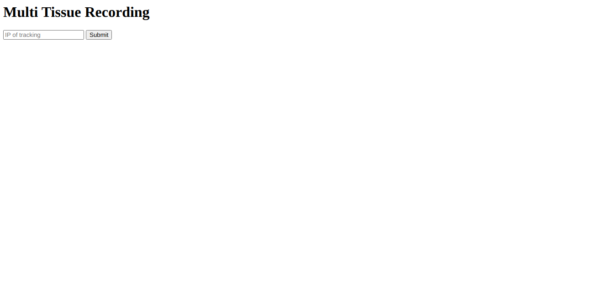
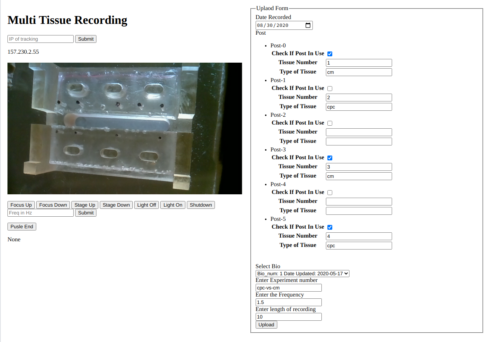

Pi Setup
This has been tested on the raspberry pi 4 4gb version. Currently uses a 32 bit image, will be upgraded to a 64 bit image in the near future.
Download Pi Image:
This is a custom image built on a dietpi base image specifically for this project.
Trackspian gzipFlash Image onto micro SD:
Use balena etcher or something similar to flash the sd card with the .img file. If you download .gz file you will need to unzip it to get the .img file.
Insert SD and boot up:
Insert the micro sd card, make sure the pi is connected to Ethernet (or you have wifi set up), and power it on.
Find the IP:
Option 1: Using ping
Type ping DietPi into the terminal of a computer on the same network as the Pi. This should return the ip address the pi is using.
Option 2: Using nmap
Make sure your computer is on the same network as the pi and find the ip address using hostname -I
List all the devices on your network using sudo nmap -sn first.second.third.0/24 where the first.second.third is replaced by the first three numbers of your ip.
The ip should be listed under the entry "Raspberry Pi Trading".
Recording
Web interface located at http://ip-of-pi:5000
Connect to VM:
Enter the ip of your remote machine. If you have not set one up yet follow instructions here.
Record Video:
Use the controls on the left to get the posts into focus. Fill out the form with which tissues are in the video. The 6 check boxes from top to bottom represent the 6 possible tissues from left to right. Once you click upload it will record a video and send it to your remote machine.